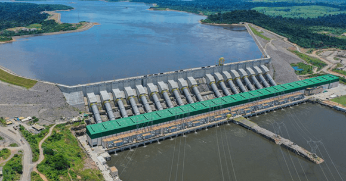
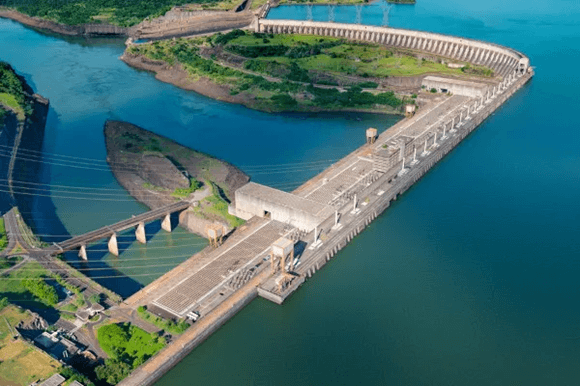
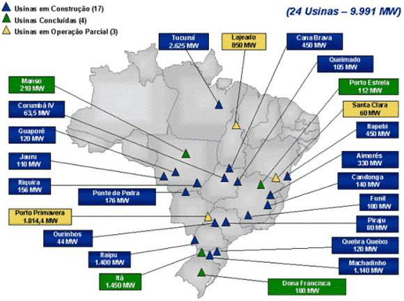
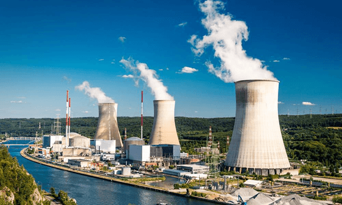
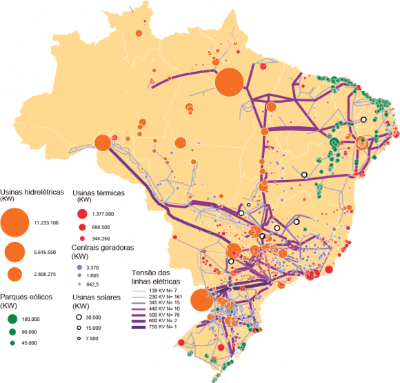

Objetivo: Diferenciar e comparar as principais formas de geração de energia elétrica (hidrelétricas, termelétricas movidas a gás, carvão e urânio). Compreender a formação e o funcionamento do sistema nacional de geração, transmissão e distribuição de energia elétrica brasileiro.
Digite seu nome
Introdução
Amatriz energética de um país refere-se ao conjunto de todas as fontes de energia disponíveis para suprir suas necessidades, incluindo energia elétrica, calor e combustível.
No Brasil, a matriz energética é diversificada, com predominância de fontes renováveis, como a hidroeletricidade. A matriz elétrica, por outro lado, é especificamente voltada para as fontes de energia que geram eletricidade.
Questões para serem respondidas no caderno sobre o tema da aula de hoje:
1. O que é matriz energética e como ela se diferencia da matriz elétrica?
2. Quais são as principais características das usinas hidrelétricas no Brasil?
3. Por que a Usina de Belo Monte é considerada uma obra controversa?
4. Como a Usina de Itaipu exemplifica a cooperação internacional?
5. Quais são as principais vantagens e desvantagens das usinas termoelétricas?
6. Quais são os riscos associados às usinas nucleares e como esses riscos são exemplificados pelos acidentes de Chernobyl e Fukushima?
7. Por que o Brasil precisa diversificar sua matriz energética e quais fontes de energia alternativas podem ser exploradas?
8. Como o sistema de transmissão interligado contribui para a distribuição de energia no Brasil?
9. Qual é a importância da Usina de Tucuruí para o projeto de mineração de Grande Carajás?
10. Como a matriz energética do Brasil se destaca no cenário global e quais são os desafios enfrentados para o futuro?
Resumo da Matriz Energética Brasileira
Matriz Energética Brasileira: Conjunto de fontes de energia disponíveis no Brasil.
Matriz Elétrica: Focada na geração de eletricidade.
Usinas Hidrelétricas: Utilizam a força da água para gerar energia. Exemplos:
Belo Monte: 11.233 MW, localizada no rio Xingu.
Itaipu: 14.000 MW, projeto binacional (Brasil e Paraguai), rio Paraná.
Tucuruí: 8.370 MW, rio Tocantins, foco na mineração de alumínio.
Termoelétricas: Produzem energia pela queima de combustíveis fósseis.
Vantagens: Proximidade dos centros consumidores, independência climática.
Desvantagens: Alta poluição, custos elevados.
Usinas Nucleares: Utilizam a fissão nuclear de urânio. Exemplos:
Angra 1: 640 MW.
Angra 2: 1.350 MW.
Angra 3: 1.405 MW (em construção).
Sistema Nacional de Energia Elétrica: Sistema interligado que distribui energia por todo o Brasil.
Desafios: Segurança energética, sustentabilidade, diversificação da matriz.
Usinas Hidrelétricas
As usinas hidrelétricas utilizam a força da água para gerar energia, representando cerca de 60% da matriz energética do Brasil.
Essa fonte de energia é renovável e considerada menos agressiva ao meio ambiente, apesar de seus impactos socioambientais, como o alagamento de áreas extensas e o deslocamento de comunidades ribeirinhas.
Exemplos de usinas hidrelétricas importantes:
Usina de Belo Monte: Localizada no rio Xingu, na bacia amazônica, próxima a Altamira (PA). Será a maior usina inteiramente brasileira e uma das maiores do mundo. O projeto é controverso, devido ao seu impacto ambiental significativo, incluindo a perda de cobertura vegetal e fauna, e o deslocamento de tribos indígenas. Capacidade instalada: 11.233 MW. Previsão de término da obra: 2020 (embora algumas turbinas já estivessem operando antes disso).

Usina de Belo Monte
Usina de Itaipu: Situada no rio Paraná, na fronteira entre Brasil e Paraguai. É uma das maiores usinas hidrelétricas do mundo em capacidade instalada, com 14.000 MW. Representa um exemplo de cooperação internacional, sendo um projeto binacional entre Brasil e Paraguai. Itaipu responde por cerca de 15% da energia consumida no Brasil e 90% no Paraguai.

Usina de Itaipu
Usina de Tucuruí: Localizada no rio Tocantins, no Estado do Pará, a cerca de 300 km de Belém. A usina foi construída principalmente para fornecer energia elétrica barata para o projeto de mineração de Grande Carajás, incluindo a indústria de alumínio. Capacidade instalada: 8.370 MW.
Termoelétricas

As usinas termoelétricas produzem energia pela queima de combustíveis fósseis, como carvão, gás natural e óleo diesel.
Essas usinas são mais poluentes, liberando grandes quantidades de gases de efeito estufa e podendo causar chuva ácida.
No Brasil, as termoelétricas correspondem a menos de 10% da energia produzida no país, sendo utilizadas principalmente em períodos de seca, quando os níveis dos reservatórios hidrelétricos estão baixos.
Pontos importantes:
Vantagens: Podem ser instaladas em locais próximos aos centros consumidores e não dependem de condições climáticas.
Desvantagens: Poluição ambiental e custos elevados devido à dependência de combustíveis fósseis.
Usinas Nucleares

As usinas nucleares utilizam o calor gerado pela fissão nuclear de átomos de urânio para produzir eletricidade. No Brasil, as usinas nucleares estão localizadas em Angra dos Reis, no Estado do Rio de Janeiro, com as plantas Angra 1 e Angra 2 operando, e Angra 3 em construção.
Características das usinas nucleares:
Capacidade instalada: Angra 1 (640 MW), Angra 2 (1.350 MW), e Angra 3 (1.405 MW) após a conclusão.
Vantagens: Baixa emissão de poluentes, alta eficiência energética e abundância de urânio no mundo.
Desvantagens: Risco de acidentes nucleares, como Chernobyl (1986) e Fukushima (2011), e o problema do lixo radioativo, que permanece perigoso por milhares de anos.
Comparação das Fontes de Energia
Hidrelétricas: Fonte renovável e menos poluente, mas com impacto ambiental significativo devido ao alagamento e deslocamento de populações.
Termoelétricas: Dependência de combustíveis fósseis, alta emissão de gases poluentes, mas com vantagem de estar menos dependente de fatores climáticos.
Nucleares: Alta eficiência e baixa emissão de poluentes, mas com riscos elevados e desafios no gerenciamento de resíduos.
Sistema Nacional de Energia Elétrica

Fonte: THÉRY, Hervé; MELLO-THÉRY (2024).
O Brasil possui um sistema de transmissão interligado, que permite a distribuição de energia entre diferentes regiões do país, otimizando o uso das diversas fontes de energia disponíveis.
Esse sistema é fundamental para garantir a estabilidade do fornecimento de energia, especialmente em um país com dimensões continentais como o Brasil.
Desafios atuais:
Segurança energética: Garantir a oferta contínua de energia, especialmente em períodos de seca, quando a capacidade hidrelétrica pode ser reduzida.
Sustentabilidade: Equilibrar a necessidade de expansão da capacidade energética com a preservação ambiental e o desenvolvimento sustentável.
Diversificação da matriz: Investir em fontes de energia alternativas, como solar e eólica, para reduzir a dependência de hidrelétricas e termoelétricas.
Conclusão
Entender a matriz energética brasileira é crucial para compreender as oportunidades e desafios do desenvolvimento sustentável do país. Com uma matriz predominantemente renovável, o Brasil se destaca no cenário global, mas enfrenta desafios na diversificação de fontes e na garantia de segurança energética para o futuro.
Não existe pergunta boba! A Ciência é feita de perguntas!
P:O que é uma matriz energética e por que ela é importante para um país como o Brasil?
R: A matriz energética é o conjunto de todas as fontes de energia disponíveis em um país para suprir suas necessidades, como eletricidade, calor e combustíveis. Ela é importante porque determina como um país obtém e utiliza energia, influenciando seu desenvolvimento econômico, segurança energética e impacto ambiental. No caso do Brasil, a matriz energética é diversificada e majoritariamente composta por fontes renováveis, como a hidroeletricidade.
P:Quais são os principais impactos socioambientais das usinas hidrelétricas no Brasil?
R: As usinas hidrelétricas no Brasil têm impactos socioambientais significativos, como o alagamento de grandes áreas para a formação de reservatórios, o que pode levar ao deslocamento de comunidades ribeirinhas e indígenas. Além disso, a perda de cobertura vegetal e a alteração de ecossistemas aquáticos são outras consequências importantes, como visto no caso da Usina de Belo Monte.
P:Por que o Brasil precisa investir em diversificação da matriz energética, mesmo sendo um país com abundância de fontes renováveis?
R: Embora o Brasil tenha uma matriz energética baseada em fontes renováveis, como a hidroeletricidade, a dependência excessiva de uma única fonte de energia pode ser arriscada, especialmente em períodos de seca. Diversificar a matriz energética, investindo em fontes alternativas como solar e eólica, é crucial para garantir a segurança energética, reduzir a vulnerabilidade climática e minimizar o impacto ambiental.
MARIANO, Maryelle Florêncio (et al.). Geografia do Brasil. Londrina: Editora e Distribuidora Educacional S.A., 2018.
THÉRY, Hervé; MELLO-THÉRY; Neli Aparecida de. O sistema elétrico brasileiro.Disponível em: https://journals.openedition.org/confins/10797?lang=pt. Acesso em: 25 ago. 2024.
VESENTINI, José William. Geografia: o mundo em transição. Ensino médio. 2. ed. - São
Paulo: Ática, 2013.